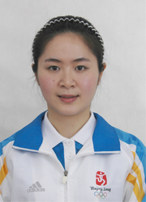

理想，在成才的三维空间中延拓
尊敬的各位老师，同学们，大家好！
我叫徐寅，来自数学与统计学院2005级。我们是青春的一代，我们是理想的一代，成才的平台需要的不只是一个简单的平面，更应该是一个多维的空间。如果将数学中一个函数的定义域扩大的过程称为延拓，那么，我希望自己的理想能在成才的三维空间中不断的延拓，不断的实现！今天，我的报告题目是《理想，在成才的三维空间中延拓》。
我出生在浙江省温州市，父亲是一名政府机关的公务员，母亲是一名高级工程师。他们来自农村，是知识改变了他们的命运，是理想
我叫徐寅，来自数学与统计学院2005级。我们是青春的一代，我们是理想的一代，成才的平台需要的不只是一个简单的平面，更应该是一个多维的空间。如果将数学中一个函数的定义域扩大的过程称为延拓，那么，我希望自己的理想能在成才的三维空间中不断的延拓，不断的实现！今天，我的报告题目是《理想，在成才的三维空间中延拓》。
我出生在浙江省温州市，父亲是一名政府机关的公务员，母亲是一名高级工程师。他们来自农村，是知识改变了他们的命运，是理想
成就了他们的人生。我时时记住父母的教诲，珍惜幸福、珍惜朋友，珍惜每一个成才的机会，不断提升自我的综合素质。也因此，有老师的无私培养，学友的精诚相助，个人的锐意进取，我的理想在成才的道路上不断实现，先后获得过宝钢优秀学生奖、校一等奖学金、优秀学生称号、优秀学生干部称号等。我毕业于浙江省温州中学，“英奇匡国，作圣启蒙”的校训给了我的启发，让我产生了当一名有志青年服务社会、奉献他人的想法；同时，因为我的家乡有“数学家摇篮”的美誉，中国现代数学奠基人之一苏步青、中国现代数学祖师姜立夫等数学大家，都是来自我的家乡，我为他们的成就感到自豪！即使我不可能像他们那样卓有成就，但我选择了数学专业，希冀在平凡的工作岗位上，演绎理想的人生！
每个人的一生中都有许多由梦想构建而成的极限点，而我们总是在不断的努力探索中达到梦想的极限。东北师范大学就是我梦想开始的起点，在这个理想与成才的天空里，我不断演绎着，推理着，思考着自己的大学生活！刚进入校园，眼前一个完全陌生而令我兴奋不已的新环境告诉我，我要为优秀的学业成绩而奋斗。毕竟，数学专业课课业繁重，逻辑思维强，抽象而又枯燥，难度很大，理想与现实产生了距离，产生了矛盾，突然有了一种陌生感。我想，选择了数学，一想到今后将走上工作岗位，要充分展现东师学子的才华和风貌，我必须打下实实在在的知识基础，在工作的实际中让更多的人感受到数学的神奇和伟大。我对自己说，虽然战胜自己是困难的，但只要战胜了自己就会成为一个最快乐、最富有的人！我迅速调整了心态，愉快地投入学习，光顾书店寻找参考书籍，早早出现在图书馆一呆就是一整天，翻阅专业期刊、资料，虚心向老师、同学求教，寻求解题方法，拓宽学习思路。入校时学校进行了英语分级考试，当时正值军训，辛苦与疲劳可想而知，我多么羡慕别人在寝室里午休的幸福，渴望自己也能躺下来安安静静地歇一歇。然而，我还是带着参考书、笔记本到综合楼悄悄地复习。二楼的小教室里只有我一个人在拼命记单词、做题目，不懈的努力让我取得了很好的成绩，也因此进入了快班。课堂的快节奏、大容量又让我感到了自己的差距，我常常清晨6点就起来在静湖边一边复述一边朗读，晚上临睡前回忆白天听力训练中的要点，在知识的海洋里，总是希冀搜寻到无尽的精神宝藏。2006年，我有幸参加东师首届数学建模大赛。为了赢得胜利，我带领团队彻夜查资料、写稿子，不停地演算、修改、校对，甚至连吃饭时还在互相争论，但我们有一个共同的目标，为思想的统一、模型的建立而努力奋斗。最终，我们这个完全由三个大一新生组成的“联想”团队在大赛中获得了二等奖，虽然没能获得更好的名次，但我们的成绩却已是同年级中最出色的了。大三下学期，我选了一门专业学习中难度最大、综合性最强的选修课《偏微分方程》。因为课程难度大，进行一个定理的证明需要搜集大量物理、生物等其他学科领域的专业背景知识，还有许多辅助证明的数学定理，最少也需要花费两三天的时间去完成，但我仍咬牙坚持，最终我获得了优秀的成绩。抱着对计算机的浓厚兴趣，我参加了计算机软件专业二学历的学习，这额外的任务又让我放弃了一个又一个双休日。伴着白天繁忙的学生会工作，也伴着深夜自习室里的奋笔疾书，在大三时我已经先于数学本专业取得计算机软件本科第二学士学位。
“宝剑锋从磨砺出，梅花香自苦寒来”。我的老师曾对我这样评价，我不是最聪明的学生但却是最勤奋的学生。我明白，只要用心去探究，用心去钻研，用心去付出，以比别人多用的时间，比别人多花的精力，比别人多流的汗水，就必定勤能补拙，天道酬勤。经历风雨的过程虽然很辛苦，但我感受到了看到彩虹时的快乐和幸福，那是因为在我的人生理想中，勤奋、认真、努力在我的成才空间中支撑着我、鼓励着我！这种收获成功的幸福和快乐，也时时弥漫在我的学生干部工作中。
虽然，在担任院学生会副主席、学研部长期间占用了我不少的学习时间，但收获的是更多的快乐，明白的是更多的责任，学到的是更多的经验。我常常想，尽管我付出的劳动比别人要多，但那是为了更多的积累；尽管我探索的路子比别人要长，但那是为了走得更快。还记得，大一时我曾利用整整一个寒假的时间广泛收集材料，推敲与揣摩每一个项目的内容与注意事项，难忘那一台精彩纷呈的英语知识聚会活动得到同学们认可时的高兴；还记得，在后来组织、主持过的院、校级大型活动中，为筹划一个活动，起草一份计划，撰写一份总结，难忘那同学们一起为我苦思冥想，字斟句酌的无私付出精神；还记得，双百论坛、就业经验交流会、教师职业准备大型系列活动等的成功举办，难忘那一个个废寝忘食的日日夜夜。如果不是自己心中坚定的理想和信念，也许已经是困难和挑战面前的一个逃兵了。俗话说得好，“一个篱笆三个桩，一个好汉三个帮”，让我感到幸福的是，我不是一个人在战斗。任何事情，不可能单枪匹马、孤军作战，这是我在学生干部工作时最需要团队合作精神的深深体会。因为你们，才有我理想实现的基础，因为你们，才有我不断成才的机会，因为你们，才使我的综合素质得到全面的锻炼，并在其他更多的社会实践、技能实践中进一步得到提升，实现了理想的延拓了，体现了成才的价值。
成才的路犹如一条数轴，理想犹如数轴上的一个个坐标点，在成才的数轴之路上无限延长，青春的光芒在成才的三维空间闪闪发亮。为了提高自己的技能素质和社会实践经验，我不断地在成才的路上积极探索、努力追求，许多的院、校级活动中常常会看到我热情参与的身影。如果没有积极参加学校教师技能大赛的热情，就不能成为唯一进入决赛并获奖的大一新生；如果没有积极追求外语水平提高的渴望，就不能获得校英语大赛“十佳”称号；如果没有对计算机技术的喜好，就不能有“遇见东师”动画作品在东师“理想杯”计算机技能大赛上获得成功；又如果没有爱创新、好钻研的动力，就不能有校科研立项课题“教育测评软件”的成功开发！
是的，多少个如果成为一个个现实，多少个理想在一次次成才的三维空间中得到了实现和延拓，2006年的一次暑期社会实践活动又丰富了我的人生阅历。根据学校的安排，我组织的团队前往实践地浙江温州乐清市，就“关于农村剩余劳动力转移与培训问题的研究”课题进行了考察调研。考察地地处偏僻山区，条件非常艰苦，交通不畅，生活不便，想到能收获真知，这点苦又算得了什么呢？在调研过程中，我始终坚持与群众面对面交流，向他们发放问卷，走访劳动部门，参阅有关资料。其中，发放问卷的工作尤为辛苦，许多参与调查的老乡不识字，我就逐字逐句地将调查内容解释给他们听，但也有许多老乡不配合调查，我始终耐心与友好得同他们相处，精诚所至，金石为开，他们最终被我执著的精神和认真的工作态度所感动，配合我完成了问卷调查的全部工作。通过长久不懈的努力，我充分发挥了专业优势，合理运用统计方法与计算原理，形成了一份非常有价值的调查报告，在《温州日报》上刊发。在我的努力下，温州市劳动和社会保障局与我校合作建立了实践基地，并对我的努力给予这样的评价——踏实努力、全情付出。最终，我获得了东北师范大学2006年度暑期社会实践先进个人。成绩的不断获得让我倍感自信与欣喜，每一次都有坚定的信念支撑着自己，每一次都有不懈努力的倾情付出，有了它们，我成才的三维空间不断得到了延拓，理想的翅膀才能因此向着更远的地方飞翔。
我也懂得，每一次理想的成功实现，都会赐予最认真、最积极的人们；我也更懂得，人生的理想不能只是考虑自己狭隘的私利，还要把自己的理想融入社会当中，因而我时常思考如何努力去构建学识、能力、品格三位一体的完美人生，用一颗感恩的心回报社会。学院党小组的党员进社区活动时值冬季，凛冽的寒风袭面而来，但我与战友们坚守岗位把我们的热情与温暖送给社会，送给需要我们的人们，那81岁老奶奶一句微细的“我看到了当年的自己”的话，不禁使我浮想联翩：也许她年轻的时候也像我一样为做了善事感到骄傲，或许她在鼓励着我，人人都应该关心他人，寻求理想奉献的支点和空间！2006年，我入选第六届亚洲冬季运动会志愿者，工作中一次次穿过寒冷的冰场，但我经常因奔波于工作间和主席台为各个参赛国家及时传递选手成绩而满头大汗。最难忘的是，经过重重选拔，我有幸从三万名申请者中脱颖而出成为了吉林省仅有的80名北京奥运会赛会志愿者之一，在国家奥林匹克篮球馆担任赛会志愿服务工作。每天早上4：30起床乘班车进入场馆，从6点上岗一直站到下午1点，没有休息，没有懈怠，我时刻微笑着，因为这是中国呈献给世界的一份厚礼，更是向世界人民兑现7年前申奥给世界一台精彩的体育盛会的承诺。即使比赛场地就在身后，无论球赛多么精彩，明星多么耀眼，我时刻提醒自己遵守工作规则，微笑面向观众。15天的赛程，15天的努力，每天都在疲劳与满足中度过，但颇多的感想仍留在心中，三层座席服务工作直接面对赛事、面对观众，因此我要快速应对现场各种突发状况以高效完成工作，并努力使自己成为一个“万事通”，赛会中观众们会问各式各样的问题，我会尽全力一一作答。座席区的分布、特许商品售卖点、餐饮售卖点、邮局位置、信息亭位置、最快去往洗手间的路线、如何快速指引观众尽快就坐、处理观众聚集通道或影响他人观赛的问题等，我都牢记心中。让观众因经历漫长的等待与严格的安检所产生的烦躁与不快在我热情的服务和灿烂的微笑中烟消云散。回想辛苦天天有，回味幸福时时有，国际奥委会主席罗格先生一句“感谢所有出色的志愿者”，让我激动万分，倍感志愿者的奉献价值，倍感志愿者的理想价值。我，无愧地给祖国交上了一份满意的答卷。我，愉快地把我的微笑与真诚传递给了来自世界各国的友人；我，自豪地把我的微笑与真诚写在了不断展开的人生理想画卷之上！
1，2,3,4,5,6,7,它不仅仅是一串自然数，更是我一串艰辛的脚印，成功的足迹，它记录的是我不断探索的人生，演奏的是我不断成长的音符；它不仅仅是一串自然数，更是我成才空间中一个个理想的集合点，在不断的放大、不断的升华！最后，让我以一句“机遇与挑战共存，理想与成才同在”的话与大家共勉，祝愿大家在成才的道路上，不断延拓自己最有价值的人生理想空间！
谢谢！
每个人的一生中都有许多由梦想构建而成的极限点，而我们总是在不断的努力探索中达到梦想的极限。东北师范大学就是我梦想开始的起点，在这个理想与成才的天空里，我不断演绎着，推理着，思考着自己的大学生活！刚进入校园，眼前一个完全陌生而令我兴奋不已的新环境告诉我，我要为优秀的学业成绩而奋斗。毕竟，数学专业课课业繁重，逻辑思维强，抽象而又枯燥，难度很大，理想与现实产生了距离，产生了矛盾，突然有了一种陌生感。我想，选择了数学，一想到今后将走上工作岗位，要充分展现东师学子的才华和风貌，我必须打下实实在在的知识基础，在工作的实际中让更多的人感受到数学的神奇和伟大。我对自己说，虽然战胜自己是困难的，但只要战胜了自己就会成为一个最快乐、最富有的人！我迅速调整了心态，愉快地投入学习，光顾书店寻找参考书籍，早早出现在图书馆一呆就是一整天，翻阅专业期刊、资料，虚心向老师、同学求教，寻求解题方法，拓宽学习思路。入校时学校进行了英语分级考试，当时正值军训，辛苦与疲劳可想而知，我多么羡慕别人在寝室里午休的幸福，渴望自己也能躺下来安安静静地歇一歇。然而，我还是带着参考书、笔记本到综合楼悄悄地复习。二楼的小教室里只有我一个人在拼命记单词、做题目，不懈的努力让我取得了很好的成绩，也因此进入了快班。课堂的快节奏、大容量又让我感到了自己的差距，我常常清晨6点就起来在静湖边一边复述一边朗读，晚上临睡前回忆白天听力训练中的要点，在知识的海洋里，总是希冀搜寻到无尽的精神宝藏。2006年，我有幸参加东师首届数学建模大赛。为了赢得胜利，我带领团队彻夜查资料、写稿子，不停地演算、修改、校对，甚至连吃饭时还在互相争论，但我们有一个共同的目标，为思想的统一、模型的建立而努力奋斗。最终，我们这个完全由三个大一新生组成的“联想”团队在大赛中获得了二等奖，虽然没能获得更好的名次，但我们的成绩却已是同年级中最出色的了。大三下学期，我选了一门专业学习中难度最大、综合性最强的选修课《偏微分方程》。因为课程难度大，进行一个定理的证明需要搜集大量物理、生物等其他学科领域的专业背景知识，还有许多辅助证明的数学定理，最少也需要花费两三天的时间去完成，但我仍咬牙坚持，最终我获得了优秀的成绩。抱着对计算机的浓厚兴趣，我参加了计算机软件专业二学历的学习，这额外的任务又让我放弃了一个又一个双休日。伴着白天繁忙的学生会工作，也伴着深夜自习室里的奋笔疾书，在大三时我已经先于数学本专业取得计算机软件本科第二学士学位。
“宝剑锋从磨砺出，梅花香自苦寒来”。我的老师曾对我这样评价，我不是最聪明的学生但却是最勤奋的学生。我明白，只要用心去探究，用心去钻研，用心去付出，以比别人多用的时间，比别人多花的精力，比别人多流的汗水，就必定勤能补拙，天道酬勤。经历风雨的过程虽然很辛苦，但我感受到了看到彩虹时的快乐和幸福，那是因为在我的人生理想中，勤奋、认真、努力在我的成才空间中支撑着我、鼓励着我！这种收获成功的幸福和快乐，也时时弥漫在我的学生干部工作中。
虽然，在担任院学生会副主席、学研部长期间占用了我不少的学习时间，但收获的是更多的快乐，明白的是更多的责任，学到的是更多的经验。我常常想，尽管我付出的劳动比别人要多，但那是为了更多的积累；尽管我探索的路子比别人要长，但那是为了走得更快。还记得，大一时我曾利用整整一个寒假的时间广泛收集材料，推敲与揣摩每一个项目的内容与注意事项，难忘那一台精彩纷呈的英语知识聚会活动得到同学们认可时的高兴；还记得，在后来组织、主持过的院、校级大型活动中，为筹划一个活动，起草一份计划，撰写一份总结，难忘那同学们一起为我苦思冥想，字斟句酌的无私付出精神；还记得，双百论坛、就业经验交流会、教师职业准备大型系列活动等的成功举办，难忘那一个个废寝忘食的日日夜夜。如果不是自己心中坚定的理想和信念，也许已经是困难和挑战面前的一个逃兵了。俗话说得好，“一个篱笆三个桩，一个好汉三个帮”，让我感到幸福的是，我不是一个人在战斗。任何事情，不可能单枪匹马、孤军作战，这是我在学生干部工作时最需要团队合作精神的深深体会。因为你们，才有我理想实现的基础，因为你们，才有我不断成才的机会，因为你们，才使我的综合素质得到全面的锻炼，并在其他更多的社会实践、技能实践中进一步得到提升，实现了理想的延拓了，体现了成才的价值。
成才的路犹如一条数轴，理想犹如数轴上的一个个坐标点，在成才的数轴之路上无限延长，青春的光芒在成才的三维空间闪闪发亮。为了提高自己的技能素质和社会实践经验，我不断地在成才的路上积极探索、努力追求，许多的院、校级活动中常常会看到我热情参与的身影。如果没有积极参加学校教师技能大赛的热情，就不能成为唯一进入决赛并获奖的大一新生；如果没有积极追求外语水平提高的渴望，就不能获得校英语大赛“十佳”称号；如果没有对计算机技术的喜好，就不能有“遇见东师”动画作品在东师“理想杯”计算机技能大赛上获得成功；又如果没有爱创新、好钻研的动力，就不能有校科研立项课题“教育测评软件”的成功开发！
是的，多少个如果成为一个个现实，多少个理想在一次次成才的三维空间中得到了实现和延拓，2006年的一次暑期社会实践活动又丰富了我的人生阅历。根据学校的安排，我组织的团队前往实践地浙江温州乐清市，就“关于农村剩余劳动力转移与培训问题的研究”课题进行了考察调研。考察地地处偏僻山区，条件非常艰苦，交通不畅，生活不便，想到能收获真知，这点苦又算得了什么呢？在调研过程中，我始终坚持与群众面对面交流，向他们发放问卷，走访劳动部门，参阅有关资料。其中，发放问卷的工作尤为辛苦，许多参与调查的老乡不识字，我就逐字逐句地将调查内容解释给他们听，但也有许多老乡不配合调查，我始终耐心与友好得同他们相处，精诚所至，金石为开，他们最终被我执著的精神和认真的工作态度所感动，配合我完成了问卷调查的全部工作。通过长久不懈的努力，我充分发挥了专业优势，合理运用统计方法与计算原理，形成了一份非常有价值的调查报告，在《温州日报》上刊发。在我的努力下，温州市劳动和社会保障局与我校合作建立了实践基地，并对我的努力给予这样的评价——踏实努力、全情付出。最终，我获得了东北师范大学2006年度暑期社会实践先进个人。成绩的不断获得让我倍感自信与欣喜，每一次都有坚定的信念支撑着自己，每一次都有不懈努力的倾情付出，有了它们，我成才的三维空间不断得到了延拓，理想的翅膀才能因此向着更远的地方飞翔。
我也懂得，每一次理想的成功实现，都会赐予最认真、最积极的人们；我也更懂得，人生的理想不能只是考虑自己狭隘的私利，还要把自己的理想融入社会当中，因而我时常思考如何努力去构建学识、能力、品格三位一体的完美人生，用一颗感恩的心回报社会。学院党小组的党员进社区活动时值冬季，凛冽的寒风袭面而来，但我与战友们坚守岗位把我们的热情与温暖送给社会，送给需要我们的人们，那81岁老奶奶一句微细的“我看到了当年的自己”的话，不禁使我浮想联翩：也许她年轻的时候也像我一样为做了善事感到骄傲，或许她在鼓励着我，人人都应该关心他人，寻求理想奉献的支点和空间！2006年，我入选第六届亚洲冬季运动会志愿者，工作中一次次穿过寒冷的冰场，但我经常因奔波于工作间和主席台为各个参赛国家及时传递选手成绩而满头大汗。最难忘的是，经过重重选拔，我有幸从三万名申请者中脱颖而出成为了吉林省仅有的80名北京奥运会赛会志愿者之一，在国家奥林匹克篮球馆担任赛会志愿服务工作。每天早上4：30起床乘班车进入场馆，从6点上岗一直站到下午1点，没有休息，没有懈怠，我时刻微笑着，因为这是中国呈献给世界的一份厚礼，更是向世界人民兑现7年前申奥给世界一台精彩的体育盛会的承诺。即使比赛场地就在身后，无论球赛多么精彩，明星多么耀眼，我时刻提醒自己遵守工作规则，微笑面向观众。15天的赛程，15天的努力，每天都在疲劳与满足中度过，但颇多的感想仍留在心中，三层座席服务工作直接面对赛事、面对观众，因此我要快速应对现场各种突发状况以高效完成工作，并努力使自己成为一个“万事通”，赛会中观众们会问各式各样的问题，我会尽全力一一作答。座席区的分布、特许商品售卖点、餐饮售卖点、邮局位置、信息亭位置、最快去往洗手间的路线、如何快速指引观众尽快就坐、处理观众聚集通道或影响他人观赛的问题等，我都牢记心中。让观众因经历漫长的等待与严格的安检所产生的烦躁与不快在我热情的服务和灿烂的微笑中烟消云散。回想辛苦天天有，回味幸福时时有，国际奥委会主席罗格先生一句“感谢所有出色的志愿者”，让我激动万分，倍感志愿者的奉献价值，倍感志愿者的理想价值。我，无愧地给祖国交上了一份满意的答卷。我，愉快地把我的微笑与真诚传递给了来自世界各国的友人；我，自豪地把我的微笑与真诚写在了不断展开的人生理想画卷之上！
1，2,3,4,5,6,7,它不仅仅是一串自然数，更是我一串艰辛的脚印，成功的足迹，它记录的是我不断探索的人生，演奏的是我不断成长的音符；它不仅仅是一串自然数，更是我成才空间中一个个理想的集合点，在不断的放大、不断的升华！最后，让我以一句“机遇与挑战共存，理想与成才同在”的话与大家共勉，祝愿大家在成才的道路上，不断延拓自己最有价值的人生理想空间！
谢谢！